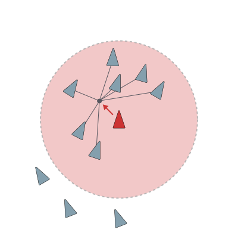
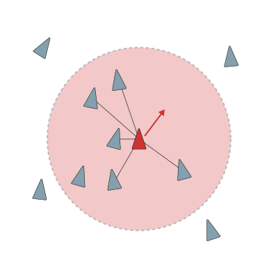
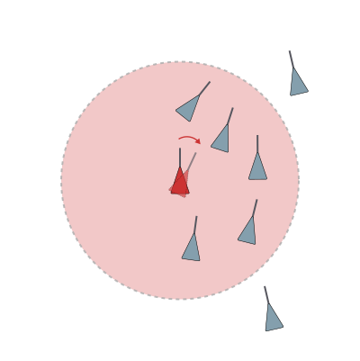

How following simple rules can lead to emergent behaviour
The common misconception
Our mental model about CAS in nature was wrong
Many people are enamored by the flocking behavior of animals like fish or birds. However, it is a common misconception that such flocks are led by a leader fish or bird that orchestrate the flock
(Potts, 1984). In this short interactive lesson, we will discover that no such leader exists.
Flocks, herds, or schools, in fact, are the result of emergent behavior that often occurs when the
individual animals follow simple rules.
As the headline suggests, this lesson utilizes the flocking behavior of animals to introduce the
concept of complex adaptive systems (CAS). Before we begin, let's lets define what CAS
are:
CAS are
systems that have a large numbers of components, often called agents, that interact and adapt
or learn. - John H. Holland
Holland posits that although many CAS show differences in the details, they all share four major features: (i) parallelism, (ii) conditional action, (iii) modularity, (iv) adaptation and evolution.
Put another way, CAS are comprised of many parts (i) whose interactions (ii & iii) lead to complex outcomes (iv) when exercised as a collective.
Specifically, in CAS, their many parts are usually local agents that follow simple rules concerning their neighbors.
This set of simple behaviors followed by a collective may ultimately lead to an emergent outcome.
CAS in
Nature
How agent-based models can help us simulate emergent behavior
It turns out that we are able to simulate such behavior with an approach called agent-based
modeling
(ABM). In ABM, a collection of individual agents obeying simple rules is modeled as a system that
evolves over time. With every timestep, each agent acts upon the rules it obeys constrained by its
immediate surroundings.
In the late 1980s, Craig Reynolds introduced an algorithm that he called the Boids
Algorithm that is based on the ABM approach (Reynolds, 1987). His algorithm
proposes to model the individuals agents as so-called boids, that possess a certain field of visions
within which they are able to respond to their surroundings and follow simple rules. Hence, the
agents' individual perspective is local, they are not aware that they are part of a global
system,
neither are they aware of all of their neighbors.
When translating the concept of CAS to nature, we can imagine that different CASs have
individual
characteristics, depending of whether we think of schools of fish, insects, or flocks of birds.
Let's explore a set of possible characteristics in the interactive simulations below.
Rules
The three rules for the agents to follow are simple
The agents or boids in our simulation will start moving from a random location starting from the center of a canvas. While doing that, they will follow three rules with respect to their neighbors in their local vicinity. Their local vicinitry is given by a radius that we call field of vision.

Cohesion
If agents are within the field of perception, steer towards the center of all neighbors.

Separation
Agents that are too close to each other will try to maintain a safe distance from each other.

Alignment
If agents approach each other within their field of vision, they will align their trajectories.
Interrogating the rules
Dissecting the model into its constituent parts builds intuition
Cohesion
Under this rule, boids are steering toward the center of mass of all boids in their vicinity.
However,
that merely leads to one or possibly several individual clusters of boids across the canvas.
Separation
Under this rule, the boids will avoid each other and try to keep a safe distance. As a result, we
merely see dispersed boids across the canvas.
Alignment
Under this rule, the boids will try to align their steering angle with the average steering angle
of
all the boids in their vicinity. Now, we see flocking behavior starting to form, however, it is not as
sophisticated as expected.
Putting it all together
Cohesion, Separation &
Alignment in one simulation
In our final simulation, the boids will obey all three rules that we introduced above. The
individual
strength of compliance with each rule is exposed to you by sliders. That means that you can
dynamically
interact with the simulation and change the rules on the fly. In its initial state, all three rules
are
neglected by the boids.
Exercise
Try to find a combination of rules that will lead to emergent behavior such as what can be
observed from bird flocking behavior. Once you are happy with your attempt, have a look at a possible solution by clicking the button below.
Alignment: 75 %; Cohesion 55 %; Separation 90 %
In setting the sliders to appropriate levels, we see emergent behavior evolve that is
very similar to the murmuration of birds. As we can see, this murmuration happens although no boid knows acts as a leader or knows the entire system.
References
Reynolds, C. W. (1987). Flocks, herds and schools: A distributed behavioral model. In
Proceedings of the 14th annual conference on Computer graphics and interactive
techniques (pp. 25-34).
Potts, W. K. (1984). The chorus-line hypothesis of manoeuvre coordination in avian flocks.
Nature, 309(5966),
344-345.
Flake, G. W. (1998). The computational beauty of nature: Computer
explorations of
fractals, chaos, complex systems, and adaptation. MIT press.